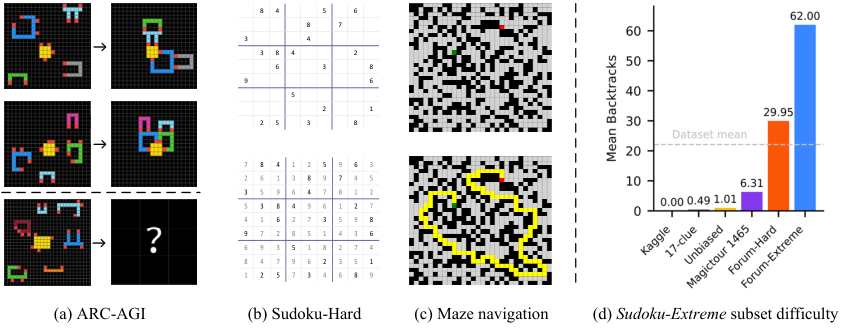
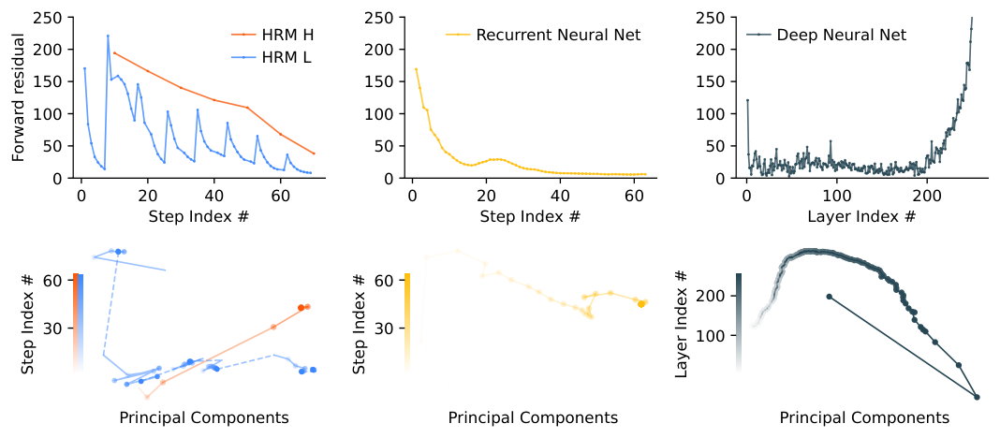

少即是多：用极小的网络做递归推理
Less is More: Recursive Reasoning with Tiny Networks
GitHub star 为 2026-10-19 的快照。阅读状态、进度与收藏只保存在你的浏览器里。
逐节精读
这部分按论文的章节顺序，用本站自己的话把整篇论文从头讲一遍。TRM 是对另一篇论文 HRM 的简化，所以前三节会先把 HRM 本身、以及 ARC Prize 团队对 HRM 做的复核讲清楚，再进入 TRM 的改动。读懂某个概念需要的背景知识，会在第一次用到它之前单独讲清楚（青色框）。每个结论都尽量说出“因为什么、所以什么”。TRM 论文的许可证不允许转载原图，所以 TRM 的图都换成了本站自己画的示意图，并链接到原图；HRM 论文采用 CC BY 4.0 许可，文中两张 HRM 原图未经修改直接使用。标“推算”的数字是本站根据论文、代码或公开数据算出来的，不是论文原话。每节末尾有英文原文的链接。
0 导读：这篇论文解决什么问题
大语言模型（LLM）解题的方式是一个 token 接一个 token 地往外写，先写推理过程（思维链），再写答案。这种方式在很多任务上非常成功，但在一类“答案唯一、必须一次全对”的谜题上表现很差：极难的数独、30×30 迷宫里的最短路径、以及 ARC-AGI 这类“看几个例子、猜出变换规则”的图形谜题。按 TRM 论文引用的数字，DeepSeek R1、Claude 3.7、o3-mini-high 在难数独和大迷宫上的准确率都是 0%；在更新的 ARC-AGI-2 上，Gemini 2.5 Pro 只有 4.9%。
2025 年 6 月，Sapient Intelligence 的 HRM（Hierarchical Reasoning Model，层级推理模型）给出了一个完全不同的做法：不预训练、不用思维链，只拿每类任务大约 1000 个样本，从零训练一个 2700 万参数（27M）的小模型，让它在内部的隐藏状态上反复迭代、逐步改进答案。HRM 报告的结果是：难数独 55.0%，大迷宫 74.5%，ARC-AGI-1 40.3%。HRM 的设计却相当复杂：两个网络以不同的“频率”交替运行、用隐函数定理论证的一步梯度近似、外层的深度监督、用 Q 学习训练的停止机制，外面还包着一层“模仿大脑”的解释。不久之后，ARC Prize 团队复核了 HRM，发现“层级”结构其实贡献很小，真正起作用的是外层的反复修正，以及训练时就见过评估题的示范样例。
TRM（Tiny Recursive Model，小递归模型）把 HRM 一层层剥开，只留下真正有用的部分：一个只有 2 层的网络，两个状态（当前答案 \(y\) 和一个潜在的“推理草稿” \(z\)），先用网络反复改写草稿，再用草稿改写答案；训练时对一整轮递归做完整的反向传播，不再假设什么不动点；停止机制也简化成一个二分类。结果是参数少了 4 倍，成绩反而更好：难数独 87.4%，大迷宫 85.3%，ARC-AGI-1 44.6%，ARC-AGI-2 7.8%（后两个是公开评估集上的数字）。ARC Prize 随后在不公开的半私有评估集上复核，得到 ARC-AGI-1 40%、ARC-AGI-2 6.2%，并把 2025 年论文奖第一名颁给了这篇论文。
但这些数字成立的条件非常特殊：每个任务单独训练一个模型；每道题都靠一个专属的“题目编号”向量告诉模型该做什么；ARC 上的训练数据包含了评估题的示范样例；测试时要把每道题变换 1000 次、分别求解再投票。读这篇论文，既要看懂它为什么能用 700 万参数做到这些，也要看清它和 LLM 是两回事。
读完这部分，你应该能回答这几个问题：
- Sudoku-Extreme、Maze-Hard、ARC-AGI 分别考什么？“1000 个样本 + 1000 倍数据增强”的训练是怎么进行的？
- HRM 的两个模块、一步梯度、深度监督、ACT 停止机制各自在做什么？隐函数定理在其中扮演什么角色？
- ARC Prize 的复核发现 HRM 的分数主要来自哪里？
- TRM 做了哪几处简化？每一处在消融实验里值多少个百分点？
- 为什么 2 层比 4 层好、去掉注意力反而在数独上更好？
- “7M 参数打败大模型”在什么意义上成立，在什么意义上不成立？为什么这条路线不能直接搬到 LLM 上？
1 引言：大模型为什么在这些谜题上失手，HRM 走了哪条路
1.1 论文的出发点：逐个 token 生成的弱点
LLM 是自回归地生成答案的：每一步只输出一个 token，并把它接到已有的文字后面，再预测下一个。这样做的一个后果是一错到底。在一道 81 格的数独里，只要有一格填错，整道题就算错；而模型写下一个错误的数字之后，并不能回头改它，只能在错误的基础上继续往下写。
为了更可靠，LLM 依赖两种办法。第一种是思维链（Chain-of-Thought，CoT）：先写出一步步的推理过程，再给答案。它确实能提高准确率，但代价是生成大量 token，需要高质量的推理数据来训练，而且推理过程本身也可能写错。第二种是测试时计算（Test-Time Compute，TTC）：对同一道题采样 \(K\) 个答案，取出现最多的那个，或者用一个打分模型挑分数最高的那个。论文认为，即使两者都用上，也没能解决所有难题：ARC-AGI 自 2019 年提出以来，LLM 仍未达到人类水平；在 2025 年发布的 ARC-AGI-2 上，Gemini 2.5 Pro 即使用了大量测试时计算也只有 4.9%。
1.2 三类任务：难数独、大迷宫、ARC-AGI
Sudoku-Extreme（极难数独）。9×9 的格子，每行、每列、每个 3×3 宫都要恰好包含 1–9。这个数据集由 HRM 的作者整理：他们发现常用的 Kaggle 数独数据集几乎全能用最基本的技巧解开，于是把公开的简单题和数独社区公认的高难度题合在一起，并用求解程序 tdoku 需要“回溯猜测”的次数来衡量难度。最终的数据集平均每道题要回溯 22 次，而另一个手工出题的基准 Sudoku-Bench 平均只要 0.45 次。HRM 和 TRM 都只从中抽 1000 道题来训练，TRM 在 42.3 万道题上测试。只有整盘 81 格全部正确才算对。
Maze-Hard（大迷宫）。30×30 的格子迷宫，给出起点和终点，要求在每个格子上标出它是否在最短路径上。数据由一个已有的迷宫生成程序产生，HRM 只保留最短路径长度超过 110 步的迷宫。训练集和测试集各 1000 个。路径必须合法而且最短才算对。
ARC-AGI（抽象与推理语料）。每道题（作者称为一个“任务”）给出 2–3 对示范：一个输入网格和对应的输出网格，网格最大 30×30，每格是 10 种颜色之一。还给出 1–2 个测试输入，要求画出对应的输出网格。规则需要从示范里归纳出来，比如“把每个物体向下移动直到碰到墙”“把被包围的区域涂成黄色”。每个测试输入允许提交两次，任意一次完全正确就算对。ARC-AGI-1 于 2019 年发布，TRM 论文用的版本共 800 个任务（400 个训练任务 + 400 个公开评估任务）；ARC-AGI-2 于 2025 年发布，共 1120 个任务（1000 个训练任务 + 120 个公开评估任务）。此外，两篇论文都额外加入了结构相近的 ConceptARC 数据集的 160 个任务做训练。
ARC 的几种评估集。“公开评估集”任何人都能下载，研究者用它自测。ARC Prize 另有一个不公开的“半私有评估集”（ARC-AGI-1 有 100 个任务，ARC-AGI-2 有 120 个任务），专门用来复核别人声称的分数；以及一个“私有评估集”，只在 Kaggle 比赛里使用。论文里的 ARC 分数都是公开评估集上的分数，这一点在 §5 会变得很重要。

三个任务有一个共同点：输入和输出都是固定大小的网格，长度相同。所以 HRM 和 TRM 都把网格按行展开成一串 token：数独是 81 个 token，30×30 的迷宫和 ARC 是 900 个 token（ARC 中小于 30×30 的网格用填充 token 补齐）。模型读入整串输入，一次性为每个位置输出一个 token，这一点和 LLM 的逐个生成完全不同。它更像一个“图像到图像”的翻译器，只是图像的像素是离散的符号。
1.3 “1000 个样本”到底是怎么训练的
这两篇论文常被概括为“只用 1000 个样本训练”，但实际的训练方式远比这句话复杂，读后面的结果之前必须先弄清楚。
数据增强是指对一个样本做不改变其本质的变换，得到新的样本。比如把数独的数字 1–9 整体换一种对应关系（所有 1 换成 7、所有 7 换成 3……），或者交换某些行组、列组，得到的仍然是一道合法的数独，答案也按同样的方式变换。迷宫可以旋转 90°、翻转，一共 8 种朝向（数学上叫“二面体群”变换）。ARC 网格可以换颜色、旋转翻转、平移。TRM 论文写明：数独每道题做 1000 次随机变换，迷宫每个做 8 种二面体变换，ARC 每个任务做 1000 次变换（换色、二面体变换和平移）。所以“1000 道数独”实际上展开成大约 100 万个训练样本。
题目编号嵌入（puzzle embedding）是 HRM 代码里的一个关键设计，TRM 沿用了它。ARC 的每个任务、每种变换都会被分配一个编号，编号对应一个可学习的向量（512 维），这个向量被放在输入序列的最前面。模型训练时看到的不是“示范对 + 测试输入”这样的上下文，而只是“一个输入网格 + 它所属题目的编号向量”，然后预测输出网格。换句话说，模型靠编号向量知道这道题的规则是什么，而这个向量是在训练中从这道题的示范对里学出来的。这也意味着，模型只能解答训练时见过编号的题。
把这三点放在一起，就能理解这类方法的真实性质。它不是“训练一个通用的推理模型，然后拿去做从没见过的新题”，而是“把所有要考的题（的示范部分）都放进训练集，从零训练一个模型，让它为每道题在权重和编号向量里记下一个解法”。ARC Prize 团队把这称为零预训练的测试时训练。这个性质会在后面“插曲”一节的复核里被定量地证实。
1.4 HRM 的两个新意，以及独立复核得出的结论
论文把 HRM 概括为一个有两个新意的监督学习模型。第一个是递归的层级推理：两个小网络反复交替运行，一个（\(f_L\)）运行得频繁，一个（\(f_H\)）运行得稀疏，各自维护一个潜在特征 \(z_L\) 和 \(z_H\)，两个特征都作为两个网络的输入。HRM 的作者用大脑不同区域以不同时间尺度工作的生物学论据来支持这种设计。第二个是深度监督：对同一道题做多轮“改进”，每一轮都计算损失；上一轮结束时的两个潜在特征（切断梯度之后）作为下一轮的起点。论文认为这相当于在很多轮之间加了残差连接，等效于一个深得放不进显存的网络。
接着论文引用了 ARC Prize 团队的独立分析：深度监督才是成绩的主要来源。按 TRM 引用的数字，深度监督让准确率比单步监督翻了一倍（从 19% 到 39%），而层级递归相对于“只做一次前向的普通模型”只提高了一点（从 35.7% 到 39.0%）。这说明跨多个监督步反复修正答案是值得的，而每个监督步内部的递归并不特别重要。
TRM 想证明的恰恰相反的一点是：递归本身的收益可以大得多，只是 HRM 没有把它用好。论文提出的 TRM 只用一个 2 层的小网络，把四个基准的最好成绩分别从 55% 提到 87%（Sudoku-Extreme）、从 75% 提到 85%（Maze-Hard）、从 40% 提到 45%（ARC-AGI-1）、从 5% 提到 8%（ARC-AGI-2）。
2 背景：HRM 是怎么工作的
普通的 Transformer 有固定的层数，比如 8 层，输入从第 1 层流到第 8 层就结束了，模型能做的“计算步数”被层数卡死。有些问题天然需要很多步：数独要一格一格地推理、试错、回退；迷宫要一步一步地向外扩展搜索。直接把网络堆到几百层，训练很难稳定，参数也会多到在 1000 个样本上严重过拟合。
另一个思路是循环（recurrence）：把同一个小网络反复调用很多次，每次都把上一次的输出（一个隐藏状态）作为下一次的输入。这样参数量不变，计算深度却可以随调用次数增加。代价有两个：一是训练时如果要对所有调用做反向传播（称为“随时间反向传播”，BPTT），就得把每一次调用的中间结果都存下来，显存随调用次数线性增长；二是普通的循环网络容易过早收敛，隐藏状态很快就不再变化，后面的调用等于白算。HRM 的设计就是在回应这两个问题。
2.1 结构：四个可学习的部件
HRM 是一个监督学习模型：给定输入，输出答案。输入和输出都被整理成形状为 \([B, L]\) 的 token 序列（\(B\) 是批大小，\(L\) 是序列长度，长度不同时用填充补齐）。它有四个可学习的部件：
- 输入嵌入 \(f_I\)：把每个 token 变成一个 \(D\) 维向量，形状变为 \([B, L, D]\)；
- 低层循环模块 \(f_L\) 和 高层循环模块 \(f_H\)：各是一个 4 层的 Transformer（非因果注意力，即每个位置能看到所有位置），采用当时 LLM 的常见配置：RMSNorm 归一化、线性层不带偏置、旋转位置编码 RoPE、SwiGLU 激活函数；
- 输出头 \(f_O\)：把隐藏状态映射回每个位置上各个 token 的概率。
两个模块各自维护一个隐藏状态，\(z_L\) 和 \(z_H\)，形状都是 \([B, L, D]\)。一个模块有多个输入时，HRM 直接把它们逐元素相加后送进网络。按 HRM 代码的配置（隐藏维度 \(D=512\)），两个 4 层模块加起来约 27M 参数，这就是“27M”的来源。
2.2 两种频率：低层模块跑得勤，高层模块跑得少
HRM 的一次前向传播由若干个“高层周期”组成。在每个周期里，低层模块先连续更新几次，每次都参考当前的高层状态和输入；周期结束时，高层模块根据低层模块的最终状态更新一次。用 HRM 原文的记号（共 \(N\) 个高层周期，每个周期 \(T\) 个低层步，\(i\) 是总步数）：
这里 \(\tilde x\) 是嵌入后的输入。\(N\) 个周期跑完后，用 \(z_H\) 经过输出头得到预测 \(\hat y\)。HRM 在所有实验里都用 2 个周期、每个周期 2 个低层步，所以一次前向一共调用 4 次 \(f_L\) 和 2 次 \(f_H\)，共 6 次网络；其中最后一次 \(f_L\) 和最后一次 \(f_H\) 被单独拿出来记梯度（下一小节解释）。顺序如下面示意图第一行所示。
HRM 的作者用“层级收敛”来解释这种设计。在一个周期内，高层状态固定不变，低层模块像一个普通的循环网络一样逐渐收敛到一个局部平衡点；周期结束时高层状态一更新，低层模块面对的“上下文”就变了，于是重新开始一段新的收敛过程。作者认为，这样既避免了普通循环网络“很快收敛、之后白算”的问题，又保持了稳定。
2.3 一步梯度：为什么只对最后两次调用求梯度
如果对 6 次调用全部做反向传播，就要存下 6 次调用的中间结果。HRM 的做法是：前 4 次调用在“不记梯度”模式下运行，只对最后一次 \(f_L\) 和最后一次 \(f_H\) 做反向传播。这样显存开销和总步数无关，是常数。它的理论依据来自“深度平衡模型”和隐函数定理。
设想一个映射 \(F\)，反复执行 \(z \leftarrow F(z;\theta)\)。如果迭代到某一步之后 \(z\) 不再变化，即 \(z^{*}=F(z^{*};\theta)\)，就说 \(z^{*}\) 是 \(F\) 的不动点。2019 年的深度平衡模型（Deep Equilibrium Model，DEQ）把“网络无限深”的极限直接定义为这样一个不动点：前向时用专门的求解器（而不是简单地反复调用）把 \(z^{*}\) 解出来。
关键在于反向传播。如果 \(z^{*}\) 真的是不动点，就可以不去回溯迭代过程，而是对等式 \(z^{*}=F(z^{*};\theta)\) 两边对 \(\theta\) 求导：\(\frac{\partial z^{*}}{\partial\theta}=J_F\frac{\partial z^{*}}{\partial\theta}+\frac{\partial F}{\partial\theta}\)，其中 \(J_F\) 是 \(F\) 对 \(z\) 的雅可比矩阵。移项就得到隐函数定理给出的精确梯度：
这个梯度只依赖于不动点本身，不依赖于是怎么迭代过去的，所以不用存中间结果。但求逆矩阵 \((I-J_F)^{-1}\) 很贵。把它按诺伊曼级数展开，\((I-J_F)^{-1}=I+J_F+J_F^{2}+\cdots\)（当 \(J_F\) 的谱半径小于 1 时成立），只保留第一项 \(I\)，就得到所谓的一步梯度：
直观地说，它把最后一步的输入当成常数，只对“在不动点上再调用一次 \(F\)”这一步求导。这在实现上就是：前面所有调用都不记梯度，只有最后一次调用记梯度。
HRM 把这套论证用到两个模块上：假设低层模块在每个周期内收敛到了不动点 \(z_L^{*}\)，高层模块也收敛到了 \(z_H^{*}\)，于是梯度只需要沿着“输出头 → 高层模块的最后一次调用 → 低层模块的最后一次调用 → 输入嵌入”这条路径传回去，也就是只对 6 次调用中的最后 2 次求导。HRM 原文还强调，这种只依赖最近局部活动的学习方式，比 BPTT 更符合“大脑不会回放整段历史”的生物学直觉。这个论证成立的前提是两个状态真的到达了不动点，§3.1 会检查这个前提。
n=2, T=2
n=6, T=3
2.4 深度监督：同一道题改很多轮
一次前向传播（6 次调用）只是 HRM 计算的一小段，HRM 原文称之为一个段（segment），TRM 称之为一个监督步。对同一个训练样本，HRM 会连续做多个监督步：
- 从上一个监督步留下的状态 \((z_H, z_L)\) 出发（第一步用固定的初始向量），做一次前向，得到预测 \(\hat y\)；
- 用 \(\hat y\) 和正确答案算交叉熵损失；
- 反向传播并更新一次参数；
- 把 \((z_H, z_L)\) 从计算图上“切断”（detach），作为下一个监督步的起点。
最多做 \(N_{\text{sup}}=16\) 个监督步。因为状态在两个监督步之间被切断，梯度不会跨步传播，每个监督步都只为“在当前状态的基础上把答案改得更好”负责。这里有一个很巧妙的地方：随着训练进行，网络在第 \(m\) 个监督步看到的起点，是它自己在第 \(m-1\) 步改出来的半成品。所以网络学到的，是一个能从任意半成品出发继续改进的修正器。
TRM 论文用“有效深度”来衡量这样做能达到多深：HRM 每次调用 4 层，每轮有 \(n+1=3\) 次调用，每个监督步有 \(T=2\) 轮，最多 16 个监督步，所以有效深度是 \(4\times3\times2\times16=384\) 层。HRM 因此可以“像一个 384 层的网络那样思考”，却只需要对其中 8 层做反向传播。论文把深度监督加一步梯度看作 BPTT 的一个更省算力、更符合生物学的替代品，用来解决循环网络里“很久以前的计算该为现在的错误负多少责”的时间信用分配问题。
2.5 ACT：什么时候该停，用 Q 学习来决定
深度监督有一个明显的成本问题：如果每个样本都要做满 16 个监督步才换下一个，那么同样的训练时间里，模型见到的不同样本就少了 16 倍。HRM 因此加了一个停止机制，称为自适应计算时间（Adaptive Computation Time，ACT）：对已经做对的样本早点停下，把位置让给新样本。
Q 学习是强化学习里的一种方法：对每个状态下的每个动作，估计“选这个动作之后能拿到的总回报”，这个估计值叫 Q 值。训练时，用“这一步的即时回报 + 下一步能拿到的最好 Q 值”作为目标，让当前的 Q 值去逼近它。这种“用自己对下一步的估计来构造目标”的做法叫自举（bootstrapping）。
在 HRM 里，每个监督步结束时都面临两个动作：停或继续。一个额外的线性层（Q 头）读取高层状态 \(z_H\)，输出两个经过 sigmoid 的值 \(\hat Q_{\text{halt}}\) 和 \(\hat Q_{\text{continue}}\)。选“停”就结束这道题，回报是“答案对不对”（对为 1，错为 0）；选“继续”没有即时回报，状态转移到下一个监督步。所以第 \(m\) 步的两个学习目标是：
两个 Q 值用二元交叉熵去拟合这两个目标，再加上答案本身的交叉熵损失，就是每个监督步的总损失。训练时，当 \(\hat Q_{\text{halt}}\gt\hat Q_{\text{continue}}\) 时停止；为了鼓励探索，HRM 还以一定概率（TRM 沿用的代码里是 0.1）随机规定一个最少步数（在 2 到 \(M_{\max}\) 之间均匀抽取），不到这个步数不许停。一个样本停下后，它在批里的位置立刻换成一个新样本。
注意“继续”的目标里出现了 \(\hat Q^{m+1}\)，也就是下一个监督步的 Q 值。为了得到它，HRM 的代码要在当前状态上再额外做一次完整的前向传播（6 次调用）。这个代价 HRM 论文正文没有写，TRM 是从官方代码里发现的（§3.2）。ACT 只在训练时使用；测试时总是跑满 16 个监督步，以获得最好的准确率。按 HRM 报告的数字，有了 ACT 之后，Sudoku-Extreme 上每个训练样本平均只用不到 2 个监督步。
2.6 HRM 报告的结果和“大脑对应”
HRM 论文报告的主结果（每个任务约 1000 个训练样本，从零训练）是：ARC-AGI-1 40.3%，ARC-AGI-2 5.0%，Sudoku-Extreme 55.0%，Maze-Hard 74.5%。作为对照，“直接预测”基线保持 HRM 的整套训练流程不变，只把模型换成一个同样大小（27M）的 8 层 Transformer，它在 ARC-AGI-1 上得到 21.0%，在其余三个任务上都是 0%。HRM 用这个对照来说明层级结构的作用。
HRM 论文还有一节“大脑对应”：在用 384 万道数独训练的模型上，作者计算了两个状态的“参与比”（衡量表示的有效维度），高层状态 \(z_H\) 是 89.95，低层状态 \(z_L\) 是 30.22，比值约 2.98；小鼠皮层中高层区域与低层区域的对应比值约 2.25。未经训练的同结构网络没有这种差别。HRM 作者自己也说明，这只是相关性证据，不能证明这种分层是性能的原因。TRM 正是对这类解释不满（§3.3）。
插曲 ARC Prize 对 HRM 的复核：分数到底从哪来
ARC Prize 团队于 2025 年 8 月 15 日发布了这份分析，主要实验由 Ndea 的研究员 Konstantin Schürholt 完成，代码也已公开。下面按它的结论逐条说明。
先是复核分数。在 ARC-AGI-1 的半私有集（100 个任务）上，HRM 得到 32%，运行 9 小时 16 分钟，总成本 148.50 美元（每个任务 1.48 美元）；在 ARC-AGI-2 的半私有集（120 个任务）上得到 2%，每个任务 1.68 美元。成本之所以不低，是因为 HRM 的训练和推理被绑在一次运行里：要解半私有集的题，就得把这些题的示范对放进训练集重新训练一遍。分析认为，从公开评估集上声称的 41% 降到 32% 属于正常波动的偏高一侧，因为 ARC-AGI-1 的公开集和半私有集并没有按难度校准；如果模型是过拟合了公开集，分数会崩到 10% 左右甚至更低，而这没有发生。对 ARC-AGI-2 的 2%，ARC Prize 的评价是“大于 0 说明有一点信号，但不算实质性进展”。
发现一：“层级”结构的作用很小。把 HRM 换成一个参数量相同（约 27M）的普通 Transformer，其余流程完全不变，不做任何超参数调整，分数也只比 HRM 低约 5 个百分点；当外层循环只有 1 次时，两者几乎一样。调整高层、低层的步数（基线是各 2 步），增加或减少都会让成绩变差。分析还特别提醒：两者虽然参数量相同，HRM 用的计算更多，这本身就能解释一部分差距。
发现二：外层的反复修正（即深度监督的那个循环）贡献最大。只做 1 次（不修正）和做 2 次（修正 1 次）相比，分数提高 13 个百分点；从 1 次增加到 8 次，公开评估集上的分数翻了一倍。用 ACT 自动决定停止，和固定跑 16 次相比只差几个百分点。更有意思的是，训练时用 16 次循环、测试时只用 1 次的模型，比训练和测试都只用 1 次的模型高出 15 个百分点以上。这说明训练时的反复修正比测试时的反复修正更重要：它主要是在改变网络学到了什么，而不只是在测试时多算几步。
发现三：跨任务的迁移很有限，大部分分数来自“在评估题上训练”。HRM 的训练集包含 960 个任务的示范对：400 个训练任务、160 个 ConceptARC 任务，以及 400 个评估任务本身。如果只用这 400 个评估任务训练，分数从 41% 降到 31%，只掉了 10 个百分点。也就是说，大部分成绩来自模型在每道评估题自己的示范对上学到的东西，而不是从其他题迁移过来的通用能力。分析因此把 HRM 定性为一种零预训练的测试时训练方法，和 Liao 与 Gu 的“ARC-AGI without pretraining”本质相同：用梯度下降把一道题的示范对“写进”模型权重，相当于把权重当作程序的载体。Liao 与 Gu 的方法每道题单独训练一个模型，得到 21%。
发现四：训练时的数据增强很关键，但用不了那么多。增强确实显著提高分数，但每个任务 300 种变换就已接近最好成绩，不需要论文里的 1000 种；只用 30 种也只比最好成绩低 4 个百分点左右。而且训练时做增强，比测试时用更多变体投票更重要。
其他发现。HRM 把每个 ARC 任务拆成一个个独立的“输入—输出”对，每个对只配一个题目编号（任务哈希加上增强方式的代码）。模型看不到同一任务的其他示范，只能靠编号嵌入来知道该做什么变换。所以它只能处理训练时见过编号的题。另外，HRM 是纯“直推式”的：直接输出答案网格，而不是先写出一个能解释的程序。
ARC Prize：The Hidden Drivers of HRM's Performance on ARC-AGI ↗
3 HRM 可以改进的三个地方
3.1 一步梯度的前提：真的到了不动点吗
§2.3 讲过，一步梯度只有在状态真的到达不动点时才是对精确梯度的合理近似。TRM 指出了几个问题。
第一，没有任何机制保证会到达不动点。深度平衡模型在前向时会用专门的求根算法去求解方程 \(z^{*}=f(z^{*})\)，迭代到残差足够小为止；而 HRM 只是把 \(f_L\) 和 \(f_H\) 按固定次数往前调用，并不检查是否收敛。
第二，调用次数太少。HRM 只做了 4 次不记梯度的调用就开始应用一步梯度：第一个周期调用两次 \(f_L\)、一次 \(f_H\)，第二个周期只调用一次 \(f_L\)，就假设 \(z_L\) 和 \(z_H\) 都已经满足 \(z_L^{*}=f_L(z_L^{*}+z_H+x)\) 和 \(z_H^{*}=f_H(z_L^{*}+z_H^{*})\)。
第三，HRM 自己用来支持收敛的那张图，用的是另一套设置。按 TRM 的说法，HRM 原文图 3 画的是 \(n=7,\ T=7\) 时各步的“前向残差”，而 HRM 所有正式实验都用 \(n=2,\ T=2\)。即使在这张图里也能看到三点：\(z_H\) 的残差在每一步都明显大于 0；\(z_L\) 的残差要经过很多个周期才接近 0，而且始终没有真正到 0；在每个周期的第一次 \(f_L\) 调用之后（这正是一步梯度被应用的时刻），\(z_L\) 离收敛还很远。

TRM 的结论是：残差总体上随步数下降，所以把隐函数定理用到 HRM 上并非毫无根据；但在定理实际被使用的那一刻，状态多半并没有到达不动点。§4.1 会直接绕开这个问题。
3.2 ACT 让每个优化步做两次前向
ACT 本身是有用的：没有它，每个样本都要占用 16 个监督步，效率极低；有了它，Sudoku-Extreme 上平均不到 2 步就换下一个样本。但正如 §2.5 所说，Q 学习的“继续”损失需要下一个监督步的 Q 值，HRM 的代码为此对每个批次额外做一次完整的前向传播（6 次调用）。所以 HRM 每个优化步实际上要做两次前向。这一点 HRM 论文正文没有提到，是 TRM 作者读官方代码时发现的。
3.3 生物学解释让设计变得难以理解
HRM 用大脑皮层的层级结构和不同频率的神经振荡来解释两个模块，还把模型的表示维度和小鼠实验的数据做了对比。TRM 的作者认为，这些解释离人工神经网络太远，反而让人看不清 HRM 为什么要这样设计。再加上 HRM 论文没有消融实验表，又过度依赖生物学论证和不完全适用的不动点定理，很难判断哪个部件在起什么作用。比如一个很自然的问题：为什么恰好是两个潜在特征，而不是一个、三个或更多？TRM 声称可以给出一个不需要任何生物学、不需要不动点定理、不需要层级的简单解释，并说明为什么两个特征正好合适。
4 TRM：把递归推理削减到最简
4.0 整体算法：一个网络、两个状态、三层循环
TRM 有三样东西：嵌入后的题目 \(x\)，当前答案 \(y\)（嵌入形式），以及一个潜在的推理状态 \(z\)。它只有一个网络 \(f_\theta\)（2 层），用同一个网络做两件不同的事：
“先改 \(n\) 次草稿、再改 1 次答案”称为一次完整递归（latent recursion）。一个监督步内部做 \(T\) 次完整递归，其中前 \(T-1\) 次不记梯度，只有最后一次做反向传播（称为 deep recursion）。监督步之外，再套一层和 HRM 一样的深度监督，同一道题最多做 \(N_{\text{sup}}=16\) 个监督步。论文的默认设置是 \(n=6,\ T=3\)：每个监督步要调用网络 \(T(n+1)=21\) 次。
用伪代码写出来（本站按论文图 3 的结构改写，省略了批处理细节）：
def latent_recursion(x, y, z, n=6):
for _ in range(n): # 反复改写推理草稿 z（输入含题目 x）
z = net(x + y + z)
y = net(y + z) # 用草稿改写答案 y（输入不含 x）
return y, z
def deep_recursion(x, y, z, n=6, T=3):
with no_grad(): # 前 T-1 轮只为把 (y, z) 改好，不记梯度
for _ in range(T - 1):
y, z = latent_recursion(x, y, z, n)
y, z = latent_recursion(x, y, z, n) # 最后一轮完整地反向传播
return (y.detach(), z.detach()), output_head(y), q_head(y)
# 深度监督：同一批题最多改 N_sup 轮，每轮都更新一次参数
for x_in, y_true in loader:
y, z = y_init, z_init
for step in range(N_sup):
x = embed(x_in)
(y, z), logits, q = deep_recursion(x, y, z)
loss = cross_entropy(logits, y_true) + bce(q, argmax(logits) == y_true)
loss.backward(); opt.step(); opt.zero_grad()
if q > 0: break # 训练时：判断已做对就换下一道题论文在 Sudoku-Extreme（1000 道训练题、42.3 万道测试题）上做了一张总的消融表（原文表 1）。表里的“深度”是每个监督步的有效深度 \(T(n+1)n_{\text{layers}}\)，“NFP”是每个优化步要做几次前向传播。下面的图把它画成了条形图，后面 §4.1–4.8 会逐行解释。
4.1 不需要不动点定理：对一整轮递归做反向传播
TRM 的第一个、也是影响最大的改动，是彻底放弃一步梯度。它把“\(n\) 次 \(f_L\) + 1 次 \(f_H\)”定义为一次完整递归（论文这一小节仍沿用 HRM 的两个网络的写法，§4.3 之后两者合并成同一个网络），然后对这一整轮的每一次调用都做反向传播。这样就不再需要假设任何东西收敛到了不动点，隐函数定理也就用不上了。
那前面不记梯度的 \(T-1\) 轮还有没有道理？论文的解释借用了深度监督的逻辑：深度监督训练出来的网络，本来就是一个“拿到任意 \((z_L, z_H)\) 都能把它改得更接近答案”的修正器。既然如此，在不记梯度的情况下先跑几轮完整递归，也应该能把状态往答案方向推进一些；然后在这个更好的起点上，做一轮完整的、记梯度的递归。前面几轮是“免费”的改进（只花前向的计算，不占反向传播的显存），最后一轮负责学习。
效果非常大：把这一处改回一步梯度，Sudoku-Extreme 上的准确率从 87.4% 降到 56.5%（原文表 1）。代价是显存：反向传播要穿过整轮 \(n+1\) 次调用。按默认设置，TRM 要对 7 次调用 × 2 层 = 14 层存中间结果，HRM 只需 2 次调用 × 4 层 = 8 层（推算）。§4.8 会看到，\(n\) 再大就会显存不足。
4.2 更简单的解释：z_H 就是答案，z_L 是草稿
论文接着回答“为什么是两个潜在特征”。它给出的解释完全不涉及层级：\(z_H\) 就是当前答案的嵌入。把 \(z_H\) 送进输出头、在每个位置取概率最大的 token，得到的就是模型当前的答案。而 \(z_L\) 不直接对应任何答案，它只有经过 \(z_H\leftarrow f_H(z_L, z_H)\) 这一步才能变成答案。论文附录的图 6 用一个训练好的模型演示了这一点：把 \(z_H\) 解码，得到一盘完全正确的数独；把 \(z_L\) 用同样的方式解码，得到的是一堆看不出意义的数字。
想清楚这一点之后，就不需要“层级”了：只有题目 \(x\)、当前提出的答案 \(y\)（原来叫 \(z_H\)）、以及潜在推理 \(z\)（原来叫 \(z_L\)）。模型先根据题目、当前答案和当前推理，反复改进推理；再根据推理和旧答案，提出新答案（如果旧答案已经很好，就保持不变）。这个重新解释不改变算法本身，但它直接回答了为什么需要两个状态：
- 如果不保留上一轮的推理 \(z\)，模型就会“忘记自己是怎么得到上一个答案的”。论文把 \(z\) 比作思维链：它记录的是过程。
- 如果不保留上一轮的答案 \(y\)，模型就得把答案也塞进 \(z\) 里保存，挤占了本该用于推理的容量。
所以 \(y\) 和 \(z\) 都需要，而且没有明显的理由要把 \(z\) 再拆成多份。论文在 Sudoku-Extreme 上验证了这一点（原文表 2，附录图 4、图 5 给出了两种变体的伪代码）：
| 变体 | 特征个数 | 测试准确率 |
|---|---|---|
| TRM：\(y\) 和 \(z\)（默认） | 2 | 87.4% |
| 多尺度 \(z\)：\(n\) 次更新各产生一个 \(z_i\)，全部跨监督步保留 | \(n+1=7\) | 77.6% |
| 单一 \(z\)：只保留一个状态，答案也从它解码 | 1 | 71.9% |
多于两个特征和只有一个特征都更差。前者说明没有必要把推理分成多个“层级”；后者印证了“答案被迫存进推理状态”会伤害性能。
4.3 一个网络就够了
HRM 用两个网络：频繁调用的低层模块和偶尔调用的高层模块，参数是普通单网络监督学习的两倍。TRM 注意到，这两个网络要完成的任务，已经由输入里有没有 \(x\) 区分开了：更新 \(z\) 时输入是 \(x+y+z\)，含有题目；更新 \(y\) 时输入是 \(y+z\)，不含题目。网络看一眼输入就能知道自己现在该“推理”还是该“写答案”。所以 TRM 尝试用同一个网络做两件事。结果不但参数减半（10M → 5M），准确率还从 82.4% 提高到 87.4%（原文表 1）。
4.4 少即是多：2 层比 4 层好
作者先试着把网络加深以增加容量，结果发现层数越多，泛化反而越差，原因是过拟合。于是反过来：减少层数，同时按比例增加递归次数 \(n\)，让计算量和有效深度大致不变。4 层、\(n=3\) 时有效深度是 48；2 层、\(n=6\) 时是 42，两者接近。结果 2 层的版本准确率从 79.5% 提到 87.4%，参数又减半（10M → 5M）。
在大规模预训练里，模型越大通常泛化越好，这是 LLM 缩放定律告诉我们的。但这个规律的前提是数据足够多。当数据很少而模型很大时，模型有能力把训练集的每个细节都背下来，背下来的东西在新题上用不上，这就是过拟合。Sudoku-Extreme 只有 1000 道训练题（即使做了增强，本质上也只有 1000 种“题型”），一个 2 层的网络在每个监督步里被调用 21 次（相当于 42 层），计算深度足够，而可以用来“死记”的参数很少。论文的解释正是：数据太少时，小网络加深度递归、加深度监督，能绕开大部分过拟合。
论文也提到，Bai 与 Melas-Kyriazi 在深度平衡扩散模型里同样发现 2 层是最优，不过在那里 2 层只是和更大的网络打平，而 TRM 观察到 2 层更好。附录的失败尝试里还有一条同样指向过拟合：把 SwiGLU 前馈层换成混合专家层（MoE），泛化大幅下降，作者认为 MoE 和加层一样，只是增加了不必要的容量。
4.5 短而固定的序列：用 MLP 代替自注意力
Transformer 的每一层有两种“混合”：自注意力负责在不同位置之间交换信息（序列维的混合），前馈网络负责在每个位置内部变换特征（通道维的混合）。自注意力的参数只和特征维度 \(D\) 有关（生成 query、key、value 的矩阵是 \([D, 3D]\)），与序列多长无关，所以它特别适合长序列，而且能处理任意长度。
2021 年的 MLP-Mixer 提出另一种做法：把张量转置一下，在序列维上做一个普通的 MLP，让每个位置的输出直接是所有位置的加权组合，权重是学出来的固定矩阵。这要求序列长度 \(L\) 固定，参数量和 \(L^{2}\) 成正比。当 \(L\) 小于等于 \(D\) 时，这样做反而更便宜。
数独的序列很短而且长度固定（81 格，加上代码里放在最前面的 16 个题目编号位置），比隐藏维度 512 小得多。TRM 于是把自注意力换成序列维上的 MLP。在 Sudoku-Extreme 上，准确率从 74.7%（用自注意力）提高到 87.4%。但在 Maze-Hard 和 ARC 这种 30×30（900 个位置）的任务上，这样做反而更差，所以论文对所有任务都同时报告了两个版本：TRM-Att（自注意力）和 TRM-MLP。
L = 81 + 16
L = 900 + 16
4.6 ACT 只需要一次前向
HRM 的 ACT 需要“继续”损失，因而每个优化步要多做一次前向（§3.2）。TRM 的做法非常直接：去掉“继续”损失，只保留一个停止概率，用二元交叉熵训练它去预测“当前答案是否已经完全正确”：
训练时，\(\hat q\gt 0\)（即 sigmoid 后大于 0.5）就停下，换下一道题。这样就不再需要下一步的 Q 值，也就不需要第二次前向。消融表显示两者的差别不显著（改回 HRM 式 ACT 是 86.1%，TRM 的做法是 87.4%），但训练省了一半的前向计算。附录还记录了一个失败尝试：干脆去掉 ACT，改成“答案做对就停”，泛化明显下降。作者推测原因是模型在同一批样本上花了太多时间，没有见到足够多样的数据。
4.7 权重的指数滑动平均（EMA）
在 Sudoku-Extreme 和 Maze-Hard 这种小数据集上，HRM 容易很快过拟合，然后训练发散。TRM 加入了权重的指数滑动平均：在训练参数 \(\theta\) 之外，再维护一份“平均参数” \(\bar\theta\)，每一步按下式缓慢跟随，评估时用 \(\bar\theta\)：
因为 \(\bar\theta\) 大约是最近一千步参数的平均，单步的剧烈波动会被平滑掉，参数不容易突然“崩掉”。这是 GAN 和扩散模型里常用的稳定技巧。在消融里，去掉 EMA 使准确率从 87.4% 降到 79.9%，论文认为它防止了突然的性能崩溃。
4.8 递归多少次最好
作者在 Sudoku-Extreme 上扫了不同的 \(T\) 和 \(n\)，并让 HRM 和 TRM 在“每个监督步的有效深度”上大致对齐：HRM 用 4 层网络、\(n=k\)；TRM 用 2 层网络、\(n=2k\)。结果见下图（原文表 3）。
从这张图能读出三件事。第一，在每个有效深度上，TRM 都比 HRM 高得多，最好的 TRM（深度 42，87.4%）比最好的 HRM（深度 84，62.3%）高 25 个百分点。第二，两者都不是越深越好：HRM 在深度 48–84 之后开始下降，TRM 在 \(T=3,\ n=6\) 达到最高，再加深反而略降。第三，TRM 的递归次数受显存限制：因为要对一整轮 \(n+1\) 次调用做反向传播，\(n=12\) 时就放不下了。论文说更多的递归也许对更难的问题有帮助，但受资源所限没有测试，而且增大 \(T\) 或 \(n\) 都会让训练大幅变慢。作者的评价是，这份显存代价“物有所值”。
- 所有消融都只在 Sudoku-Extreme 一个数据集上做，而且是用 TRM-MLP 做的（5M 那一档）。§4.5 已经说明，序列 MLP 在 Maze 和 ARC 上反而更差，所以“哪个改动值多少”在别的任务上未必成立。论文结论部分自己也承认这一点。
- “深度”对齐的是每个监督步的有效层数，近似对齐了前向计算量，但没有对齐反向传播的显存和训练总计算量（§5.4 会具体算）。
- 表里的数字都是单次训练的结果，论文没有报告多次运行的方差；官方代码的说明里给出的预期是 Sudoku-MLP “约 87%（±2%）”，Sudoku-Att “约 75%（±2%）”。所以 1–2 个百分点的差别（比如 ACT 的 86.1% 对 87.4%）在误差范围之内，论文自己也说“没有显著差别”。
5 结果：四个基准上的成绩，以及这些数字的份量
5.1 实验设置
任务和数据增强在 §1.2–1.3 已经讲过：Sudoku-Extreme 用 1000 道题、每道 1000 次变换；Maze-Hard 用 1000 个迷宫、每个 8 种二面体变换；ARC-AGI 用 1000 种变换（换色、二面体、平移），并加入 ConceptARC 的 160 个任务；ARC 的成绩都是公开评估集上的成绩。
论文附录给出的训练设置是：AdamW 优化器（\(\beta_1=0.9,\ \beta_2=0.95\)），学习率预热 2000 步，批大小 768，隐藏维度 512，最多 16 个监督步，损失函数用 stable-max 交叉熵（softmax 的一种数值上更稳定的替代，TRM 用它来提高训练稳定性；HRM 在小样本实验中也用它，称其能改善泛化），权重 EMA 系数 0.999。数独和迷宫训练 6 万个 epoch，学习率 \(10^{-4}\)，权重衰减 1.0；ARC 训练 10 万个 epoch，学习率 \(10^{-4}\)（题目编号嵌入用 \(10^{-2}\)），权重衰减 0.1。HRM 用两个 4 层网络、\(n=2,\ T=2\)；TRM 用一个 2 层网络、\(n=6,\ T=3\)。
硬件和时间：Sudoku-Extreme 用 1 张 L40S，一般不到 36 小时；Maze-Hard 用 4 张 L40S，不到 24 小时；ARC-AGI 用 4 张 H100，大约 3 天。在 ARC 上，测试时把每道题的 1000 个变体分别求解，逆变换后投票，取最常见的答案。
H_cycles=3 L_cycles=4，即 \(T=3,\ n=4\)，而不是论文附录写的 \(n=6\)；只有 Sudoku 的命令是 \(n=6\)。ARC Prize 复核时公开的 ARC checkpoint 配置文件也是 \(n=4\)。README 中 Sudoku 的命令是 5 万个 epoch，论文写 6 万。README 给出的 Sudoku 预期结果是 TRM-MLP “约 87%（±2%）”、TRM-Att “约 75%（±2%）”。想复现时应以代码为准。5.2 数独和迷宫（原文表 4）
| 方法 | 参数 | Sudoku-Extreme | Maze-Hard |
|---|---|---|---|
| 预训练大模型 + 思维链（数字取自 HRM 论文，通过 API 测得） | |||
| DeepSeek R1 | 671B | 0.0 | 0.0 |
| Claude 3.7 8K | ? | 0.0 | 0.0 |
| o3-mini-high | ? | 0.0 | 0.0 |
| 直接预测，小样本从零训练 | |||
| 直接预测（8 层 Transformer，HRM 流程） | 27M | 0.0 | 0.0 |
| HRM | 27M | 55.0 | 74.5 |
| TRM-Att | 7M | 74.7 | 85.3 |
| TRM-MLP | 5M / 19M | 87.4 | 0.0 |
单位都是测试准确率（%）。TRM-MLP 的参数在数独上是 5M、在迷宫上是 19M，原因见 §4.5 的推算。读这张表：在数独上，去掉注意力的 TRM-MLP 最好（87.4%），比 HRM 高 32 个百分点；在迷宫上，序列 MLP 完全失败（0.0%），而 TRM-Att 达到 85.3%，比 HRM 高约 11 个百分点。论文的解释是，在 30×30 的大网格上，自注意力的归纳偏置更合适，而序列 MLP 的容量又过大。三个大模型在这两个任务上全是 0，“直接预测”的同尺寸 Transformer 也是 0。
5.3 ARC-AGI（原文表 5）
| 方法 | 参数 | ARC-AGI-1 | ARC-AGI-2 |
|---|---|---|---|
| 预训练大模型 + 思维链（与 ARC Prize 排行榜上半私有集的数字一致，见 §5.4） | |||
| DeepSeek R1 | 671B | 15.8 | 1.3 |
| Claude 3.7 16K | ? | 28.6 | 0.7 |
| o3-mini-high | ? | 34.5 | 3.0 |
| Gemini 2.5 Pro 32K | ? | 37.0 | 4.9 |
| Grok-4-thinking | 1.7T | 66.7 | 16.0 |
| 专门定制的方案（基于 Grok-4） | 1.7T | 79.6 | 29.4 |
| 直接预测，小样本从零训练（公开评估集） | |||
| 直接预测（8 层 Transformer，HRM 流程） | 27M | 21.0 | 0.0 |
| HRM | 27M | 40.3 | 5.0 |
| TRM-Att | 7M | 44.6 | 7.8 |
| TRM-MLP | 19M | 29.6 | 2.4 |
单位是每个测试输入两次提交的准确率（%）。TRM-Att 在 ARC-AGI-1 上比 HRM 高 4.3 个百分点，在 ARC-AGI-2 上高 2.8 个百分点，参数只有 HRM 的四分之一。它高于 DeepSeek R1、Claude 3.7、o3-mini-high 和 Gemini 2.5 Pro，但明显低于 Grok-4 和基于 Grok-4 的定制方案。摘要里“参数不到这些大模型的 0.01%”说的就是这张表：7M 除以 671B 约为 0.001%（推算）。
5.4 结果的份量：这些数字是在什么条件下比出来的
前面的表格很容易被读成“一个 7M 的小模型打败了千亿参数的大模型”。下面逐项说明每组对比到底对齐了什么、没对齐什么。
(1) 规模与训练方式。TRM 的网络参数是 5M–19M，每个基准单独从零训练一个模型：数独模型不会做迷宫，ARC-AGI-1 的模型也不能直接拿去做 ARC-AGI-2（官方 README 特别提醒，ARC-AGI-2 的训练集包含部分 ARC-AGI-1 的评估题，所以两个版本不能用同一个模型训练和评估）。没有预训练，没有语言能力。
(2) “7M”没有算上题目编号嵌入表。§1.3 讲过，ARC 上每个任务的每种变换都有一个 512 维的编号向量。按 ARC Prize 公开的复核 checkpoint 估算：ARC-AGI-1 的 checkpoint 文件约 1.82 GB，代码里编号表以 32 位浮点存储，每个编号 512 个数，由此推出编号表约有 89 万个编号、约 4.5 亿个可学习的数；ARC-AGI-2 的 checkpoint 约 2.47 GB，对应约 6 亿个数（推算）。这与“约 960 个任务 × 约 1000 种变换”的数量级一致。推理时，每个样本只取出其中一个向量，所以“每次计算只用到约 7M 参数加一个向量”是对的；但“整个系统只有 7M 参数”是不对的，编号表实际上充当了“每道题的解法存储”。HRM 也有同样的编号表。
(3) TRM 与 HRM 之间：参数少了，计算并没有少。TRM 的参数是 HRM 的四分之一，但每个监督步的计算更多：TRM 调用 21 次 2 层网络，共 42 个层；HRM 调用 6 次 4 层网络，共 24 个层，所以推理时 TRM 每个监督步的计算约是 HRM 的 1.75 倍（推算，按官方代码在 ARC 上的 \(n=4\) 则约 1.25 倍）。训练时，HRM 的 ACT 要两次前向（共 48 个层），TRM 只要一次（42 个层），前向计算量接近；但 TRM 的反向传播要穿过 14 层，HRM 只穿过 8 层（推算）。此外，HRM 的数字是从 HRM 论文直接抄来的，不是在相同条件下重新训练的：TRM 用了 EMA，迷宫上 TRM 做了 8 种二面体变换，而 HRM 论文写明它在迷宫上没有做数据增强。所以 TRM 对 HRM 的领先，一部分可能来自这些训练细节，而不全是结构的功劳；论文的消融表（§4）在同一份代码下逐项控制了变量，比主表更能说明问题。
(4) 与大模型之间：几乎什么都没对齐。大模型在这些任务上没有经过任何专门训练，是“零样本”地读题作答；TRM 则在每道评估题的示范对上训练过。在 ARC 上，还有一个更隐蔽的差别：本站对照了 ARC Prize 排行榜的公开数据，表 5 中大模型的数字（如 DeepSeek R1 的 15.8 / 1.3、o3-mini-high 的 34.5 / 3.0、Grok 4 的 66.7 / 16.0）与排行榜上半私有评估集的分数一致，HRM 论文也说明这些数字取自官方排行榜；而 HRM 和 TRM 的数字是公开评估集上的。两组数字不在同一个评估集上。测试时的计算方式也完全不同：TRM 对每个测试输入要跑 1000 个变体，每个变体 16 个监督步，即 1.6 万次完整的 deep recursion（推算），再靠投票选出答案；大模型则是为每次提交生成一段带推理过程的长文本。论文没有比较两者的测试时计算量。
(5) 公开评估集 vs 半私有评估集：独立复核的结果。ARC Prize 在 2025 年 10 月按 TRM 的官方代码和配置，在半私有集上复核了 TRM：ARC-AGI-1 得 40%，每个任务成本 1.76 美元；ARC-AGI-2 得 6.2%（排行榜数据为 6.25%），每个任务 2.10 美元。这两个结果被列入 ARC Prize 排行榜（“定制方案”一类），复核用的 checkpoint 也在 Hugging Face 上公开。成本里包含了训练，因为要解半私有集的题，必须先把这些题的示范对放进训练集重新训练。和公开集上的论文数字相比，ARC-AGI-1 低了 4.6 个百分点，ARC-AGI-2 低了 1.6 个百分点，降幅比 HRM 小（HRM 从 40.3% 降到 32%，从 5.0% 降到 2%）。
(6) 其他独立复现与分析。ARC Prize 之外，几篇后续论文在自己的实验里重跑了 TRM，数字有高有低：FPRM 的作者（见文末“后来怎么样了”）复现 TRM-Att 得到 Sudoku-Extreme 72.6%、Maze-Hard 79.0%，低于论文的 74.7% 和 85.3%；URM 的作者用官方仓库重跑，报告 TRM 在 ARC-AGI-1 上 pass@1（只交一次）为 40.0%、ARC-AGI-2 上为 4.6%；TRM 作者参与的 PTRM 论文复现得到 Sudoku-Extreme 87.28%、Maze-Hard 83.80%，ARC-AGI-2 的 pass@2 为 9.72%，反而高于原论文。一份专门分析 ARC Prize checkpoint 的技术报告发现：1000 个变体投票比只跑一次原始输入，pass@1 高出约 11 个百分点；把正确的题目编号换成空白或随机编号，准确率直接降到 0。这两点和 §1.3 的分析一致：投票和题目编号都是分数的重要组成部分。
(7) 开放程度。代码以 MIT 许可公开（基于 HRM 的官方代码和 ARC Prize 的 HRM 分析代码改写），ARC Prize 公开了复核用的 checkpoint。论文的 ARC 实验需要 4 张 H100 跑约 3 天，个人研究者可以复现。论文获得了 ARC Prize 2025 的论文奖第一名；这是论文奖，不是比赛成绩奖。TRM 的训练流程计算量太大，不能直接在 Kaggle 比赛的计算限制内运行，后来有人专门研究了如何在比赛限制内微调 TRM（见“后来怎么样了”）。
5.5 为什么这条路线不能直接搬到 LLM 上
TRM 的核心想法是“用一个小网络反复改写潜在状态，并在多个步骤上监督中间答案”，这和本站“循环 Transformer”分类下的其他工作（让语言模型的若干层循环执行）有相通之处。但 TRM 的成功依赖几个 LLM 不具备的条件：
- 输出形式不同。TRM 一次性输出一个和输入同样大小的网格，每道题只有一个确定的答案；它不是生成模型，同一道题只能给出一个答案，论文结论部分自己也指出了这一点。LLM 要生成长度不定、答案不唯一的文本，必须逐个 token 生成，“对整个答案反复改写”无法直接套用。
- 数据规模的结论相反。“2 层比 4 层好”“加 MoE 反而变差”都是在只有约 1000 个样本、模型很容易过拟合的条件下得出的。LLM 预训练是数据极多的情形，此时更大的模型通常更好，论文结论也承认需要缩放定律来研究如何选择网络大小。
- 依赖题目编号，而不是上下文学习。TRM 不读示范对，而是靠训练时学到的编号向量知道该做什么。新题必须先训练出它的编号向量。LLM 的价值恰恰在于不用重新训练就能处理新输入。
- 依赖固定的短序列。数独上最好的 TRM-MLP 用序列维 MLP 代替注意力，这只在序列长度固定且很短时才可行。
- 每一步都有完整答案的监督。深度监督要求每个监督步都能拿到完整的正确答案来算损失；LLM 预训练只有“下一个 token”这种监督。
- 循环的计算账。把语言模型的层循环 \(L\) 次，每个 token 的计算量大约变成 \(L\) 倍，所以“参数少”并不等于“便宜”。本站的 Iso-Depth 缩放定律 页面给出了一个定量的参照：在训练计算量相同的条件下，一次循环只值一个独立 Transformer 块的 0.46 左右。Huginn、Ouro、Parcae 等循环语言模型页面讨论了这条路线在语言模型上的实际收益和代价。
所以，TRM 可以迁移的是一些思想（对整轮递归做反向传播而不是一步梯度、把“答案”和“推理草稿”分成两个状态、训练时就反复修正），而不是它在 ARC 上的数字。
英文原文 §5 ↗ · 原文表 4 ↗ · 原文表 5 ↗ · 附录：超参数与设置 ↗
6 结论、局限与失败的尝试
论文的总结是：TRM 用一个极小的网络反复改写潜在推理状态、逐步改进最终答案，在难题上取得了很强的泛化。和 HRM 相比，它不需要不动点定理、不需要复杂的生物学解释、也不需要层级；它把层数减半、把两个网络合成一个，大幅减少了参数，又去掉了停止机制所需的额外前向。整体上更简单，泛化也更好。
作者也坦率列出了局限：
- 选择不保证处处最优。比如序列 MLP 在 Sudoku-Extreme 上把准确率提高了约 10 个百分点（论文原文如此；按表 1 的 74.7% → 87.4%，差值是 12.7 个百分点），却在其他数据集上表现很差。不同任务可能需要不同的结构和参数量，需要缩放定律来指导。
- 为什么递归比更大、更深的网络好这么多，还没有解释。作者猜测与过拟合有关，但没有理论支撑。
- 它是监督学习模型，不是生成模型。给定一个问题，它只能给出一个确定的答案；很多问题有多个正确答案，把 TRM 推广到生成任务是一个有意思的方向。
附录列出了几项试过但失败的想法，前文已在相关位置提到，这里汇总一下：
| 尝试 | 结果与作者的解释 |
|---|---|
| 把 SwiGLU 前馈层换成混合专家层（MoE） | 泛化大幅下降。MoE 和加层一样，增加了不必要的容量。 |
| 只对最后 \(k\) 次调用求梯度（如 \(n=6\) 时 \(k=4\)），介于 HRM 和 TRM 之间 | 对泛化没有帮助，还让方法更复杂。对整轮 \(n+1\) 次调用反向传播最合理、效果最好。 |
| 去掉 ACT，改成“答案做对就停” | 泛化明显下降。可能是模型在同一批样本上花了太多时间，见到的样本不够多样。 |
| 输入嵌入和输出头共享权重 | 约束太强，泛化大幅下降。 |
| 用 TorchDEQ 把递归换成真正的不动点迭代 | 训练变慢，泛化变差。说明收敛到不动点并不是必要的。 |
后来怎么样了
TRM 发布后，很快成了“小模型在 ARC 上做递归推理”这条路线的标准基线。下面只列能从原始来源核实的事实，后续论文的数字都是各自作者报告的，大多还是预印本。
ARC Prize 的复核与评奖
- 复核（2025 年 10 月）：ARC Prize 按官方代码在半私有集上复核，ARC-AGI-1 得 40%（每任务 1.76 美元），ARC-AGI-2 得 6.2%（每任务 2.10 美元），列入排行榜，并在 Hugging Face 公开了复核用的 checkpoint（§5.4）。
- 论文奖（2025 年 12 月 5 日公布）：TRM 获得 ARC Prize 2025 论文奖第一名，奖金 5 万美元；第三名是 Liao 与 Gu 的“ARC-AGI Without Pretraining”，正是 ARC Prize 拿来和 HRM 类比的那篇（见“插曲”一节）。同年 Kaggle 比赛第一名 NVARC 在 ARC-AGI-2 私有集上得到 24.03%，ARC Prize 对其方案的描述是“改进的 ARChitects 式测试时训练模型与基于 TRM 的组件的集成”。
- ARC Prize 2025 技术报告（arXiv 2601.10904，Chollet 等）把 2025 年的主题概括为“修正循环”（refinement loop），并把 TRM 作为“在权重空间里做修正循环”的零预训练深度学习方法的代表。
把 TRM 放进比赛限制里
- Test-time Adaptation of Tiny Recursive Models（McGovern，arXiv 2511.02886，ARC Prize 2025 论文荣誉提名）：指出原版 TRM 的计算量远超比赛允许的范围。做法是先在 1280 个公开任务上预训练（4 张 H100、48 小时、70 多万步），在 ARC-AGI-2 公开评估集上约 10%；比赛时只用 12,500 步对整个小模型做全参数微调，在半私有评估任务上得到 6.67%。这相当于把 TRM 从“每道题从零训练”改成了“预训练 + 测试时微调”。
对 HRM / TRM 机制的分析
- Are Your Reasoning Models Reasoning or Guessing?（Ren 与 Liu，arXiv 2601.10679）：对 HRM 做了机制分析，结论与 TRM 对不动点假设的批评一致。HRM 甚至会在只有一个空格的极简数独上失败，作者把原因归结为“到达正确答案后不再变化”的不动点性质在实践中并不成立；单个样本的损失不是逐步下降，而是长时间停在一个平台上再突然降到 0；隐空间里存在多个不动点，其中一些对应错误答案，HRM 会被最先遇到的那个“困住”，所以它更像在“猜”而不是在“推理”。据此提出的数据混合、输入重标号和模型自举三种办法合在一起，把 Sudoku-Extreme 从约 55% 提高到 96.9%。
- Tiny Recursive Models on ARC-AGI-1（Roye-Azar 等，arXiv 2512.11847）：分析 ARC Prize 的 TRM checkpoint，发现 1000 个变体投票比单次推理的 pass@1 高约 11 个百分点；去掉正确的题目编号准确率降到 0；最终准确率的大部分在第一次递归时就已达到，有效的递归深度很浅。作者的结论是 TRM 在 ARC-AGI-1 上的成绩来自效率、针对题目的条件信息和大量测试时计算的组合，而不是很深的内部推理。
- Latent Reasoning in TRMs is Secretly a Policy Improvement Operator（Asadulaev 等，arXiv 2511.16886）：把潜在递归形式化为强化学习里的策略改进，并据此改进训练方式，报告在保持性能的同时把前向次数减少到原来的 1/18，避免了“白算的递归步”。
在 TRM 基础上的改进
- Probabilistic TRM（Sghaier、Parviz、Jolicoeur-Martineau，arXiv 2605.19943，2026 年 5 月）：TRM 的递归是确定性的，有时会陷进错误的“盆地”出不来。PTRM 在每次 deep recursion 时往潜在状态里加高斯噪声，并行跑 \(K\) 条轨迹，再用 TRM 原有的 Q 头挑出最可能正确的一条，不需要重新训练、也不需要针对任务的数据增强。报告 Sudoku-Extreme 从 87.4% 提高到 98.75%，Pencil Puzzle Bench 上从 62.6% 提高到 91.2%。读这些数字时要注意推理计算量：Sudoku 上用的是 \(K=100\) 条轨迹、每条 64 个监督步，而标准 TRM 是 1 条轨迹、16 步，计算约是原来的 400 倍（推算）；在 ARC-AGI-2 上，他们复现的 TRM 与 PTRM 的 pass@2 都是 9.72%，没有提高（pass@1 从 7.36% 提到 8.47%）。
- Fixed-Point Reasoners（Movahedi 等，arXiv 2606.18206，2026 年 6 月）：指出 HRM 和 TRM 都用后归一化（post-norm）：它能防止激活值在反复循环中发散，但非循环的深层网络通常更适合前归一化。他们改用前归一化加残差缩放，以改善深度循环中的信号传播，并把“隐藏状态收敛到不动点”直接当作停止信号。有趣的是，TRM 抛弃的“不动点”在这里以停止条件的形式回来了。他们的 7M 模型 FPRM 没有层级结构，报告 Sudoku-Extreme 94.2%、Maze-Hard 87.0%、ARC-AGI-1 47.5%、ARC-AGI-2 6.2%（ARC 为 pass@2），并报告 HRM 和 TRM 的 ACT 并没有真正按题目难度分配计算。
- Universal Reasoning Model（Gao 等，arXiv 2512.14693）：从通用 Transformer（Universal Transformer）出发系统地拆解，认为 ARC 上的提升主要来自循环带来的归纳偏置和 Transformer 中强非线性的部件，而不是复杂的结构设计；加入短卷积和截断的循环反向传播后，报告 ARC-AGI-1 pass@1 53.8%、ARC-AGI-2 pass@1 16.0%。
- 其他：用 Mamba-2 混合层替换 TRM 中的 Transformer 层（arXiv 2602.12078：混合模型与原版 TRM 的参数为 6.83M 对 6.86M，ARC-AGI-1 pass@2 为 45.88% 对 43.88%）；把 TRM 的“答案 + 推理状态”结构用到保险定价的表格数据上（Tab-TRM，arXiv 2601.07675）；在推理时用模型自己的中间读出来引导潜在动力学（arXiv 2608.24136，在包括 TRM 在内的三种循环模型上测试数独和迷宫）。
代码仓库截至 2026-10-19 有 6,556 个 star、1,043 个 fork；README 说明，由于大量自动生成的无关 issue，仓库已暂时归档为只读。在本站的“循环 Transformer”分类里，可以对照阅读：最早把“同一层反复调用 + 自适应停止”引入 Transformer 的 Universal Transformers；把循环用到语言模型上的 Huginn、Ouro 和 Mixture-of-Recursions；以及在相同计算量下衡量“一次循环值多少”的 Iso-Depth 缩放定律。
作者
单位按论文署名。背景只列可公开查证的信息：作者主页、实验室与机构页面、作者本人署名的论文。
影响力
- 引用：见页首（Semantic Scholar 快照）。
- 奖项：ARC Prize 2025 论文奖第一名，奖金 5 万美元（2025-12-05 公布）。
- 独立复核：ARC Prize 在半私有集上复核为 ARC-AGI-1 40%、ARC-AGI-2 6.2%，列入 ARC Prize 排行榜；复核 checkpoint 以 MIT 许可发布在 Hugging Face（arcprize/trm_arc_prize_verification）。
- 开源：SamsungSAILMontreal/TinyRecursiveModels，6,556 个 star、1,043 个 fork（截至 2026-10-19），MIT 许可，仓库创建于 2025-10-07，目前暂时归档为只读。代码基于 HRM 官方代码与 ARC Prize 的 HRM 分析代码。
- 采用：ARC Prize 2025 Kaggle 第一名 NVARC 的方案包含基于 TRM 的组件；ARC Prize 2025 技术报告把它作为零预训练方法的代表；PTRM、FPRM、URM 等后续工作都以它为基线或起点。
- 发表：arXiv 预印本，首版 2025-10-06，截至 2026-10-19 只有这一个版本，本站没有查到会议或期刊版本。
延伸阅读
- Universal Transformers：同一层反复调用 + ACT 自适应停止的源头，HRM 的外层循环和 ACT 都与它相似。
- Looped Transformers as Programmable Computers：从表达能力的角度说明循环 Transformer 能模拟程序执行。
- Reasoning with Latent Thoughts：循环的浅层模型与更深的模型在推理任务上的对比。
- Huginn（Recurrent Depth） 与 Ouro（LoopLM）：把潜在空间循环用到大规模语言模型预训练上。
- Iso-Depth 缩放定律 与 Parcae：在相同计算量或相同参数下，循环到底值多少。
- Mixture-of-Recursions：按 token 自适应决定递归次数。
- HRM 原论文 ↗ · ARC Prize 对 HRM 的复核 ↗ · ARC Prize 2025 结果与分析 ↗
- 返回论文书架
本页是对论文的中文精读笔记，正文为本站撰写，并非翻译。数字与结论以原文为准：arXiv:2510.04871（arXiv 非独占分发许可，因此 TRM 的图均为本站自绘示意图，并链接到原图）。文中两张 HRM 原图（HRM 原文图 3、图 6）取自 arXiv:2506.21734（Guan Wang 等），采用 CC BY 4.0 许可，未做修改。ARC Prize 的复核与评奖信息来自 arcprize.org 的博客与排行榜数据（截至 2026-10-19）。